Альфа-Хак 2026 · команда gitAlphaMerge
Умный кредитный кабинет предпринимателя
Помощник ИП и ООО рядом с Альфа-Интеллектом: считает готовность к финансированию по выписке и объясняет, что сделать, чтобы лимит вырос.
Стендalphahack.ruКодgithub.com/gitAlphaMerge/credit-cabinet
01
Проблема
Предприниматель узнаёт, готов ли он к кредиту, только после отказа
Анкета спрашивает то, что банк и так видит в выписке. А отказ приходит без причины и без шага, после которого ответ был бы другим.
Клиентунепонятно, какой продукт ему подходит и на какую сумму рассчитывать сейчас.
Банкуменеджер тратит время на заявки, которые система могла решить сама, и на дозапросы документов.
Решение
Не «одобрено / отказ», а готовность и следующий шаг
- Ядро считаетпо выписке: поток, нагрузку, стоп-факторы. Правила, а не чёрный ящик.
- Агент спрашивает и объясняетцель, сумму и срок, затем причины и что изменит ответ.
- Решает банкпростые заявки система, спорные менеджер в том же кабинете.
Готовность: 7 из 9 условий
Лимит сейчас1 015 000 ₽
После шага1 523 000 ₽
- Выписка за 12 месяцев загружена
- Компания подтверждена в реестре
- Подтвердить договор с заказчиком
Путь клиента
От входа до выданного кредита в одном кабинете
Анкета, реестр, выписка, решение ядра, договор в PDF, кабинет с кредитом. Спорная заявка уходит менеджеру с записью на звонок.

Ядро
Калькулятор на экспертных правилах, а не обученная модель
01ВыпискаCSV банка и 1С, свои переводы и заём учредителя отделяются
02Потокчистый денежный поток по месяцам
03НагрузкаDSCR 1,25 при стрессе выручки −30%
04Стоп-факторыотдельным шлагбаумом, с кодом причины
05Ответстатус, инструмент, лимит сейчас и после шага
6продуктов в каталоге, сетка сроков, овердрафт на 30, 60 и 90 дней
8 из 8золотых сценариев ядро проходит на проверке
check_golden.pyАгент
Агент спрашивает и объясняет. Цифры даёт только ядро
- Workflow, а не свободный агентприёмщик → код-роутер → ядро → объяснение → код-страж.
- Стражне пропускает выдуманные суммы и обещания одобрения.
- Знает заявкуцель, сумму, срок, решение и варианты из кабинета, не спрашивает заново.
Сторона банка
Менеджер видит только то, где нужен человек
Зелёная заявкасистема выдаёт оффер без менеджера: договор, подпись, кабинет.
Не хватает данныхклиенту приходит дозапрос, после ответа ядро пересчитывает.
Спорнаяв очередь менеджера с причинами, документами и записью на звонок.
Роли client, manager и system в одном кабинете, журнал событий с цепочкой хэшей.
Кредитный кабинет07Честно
Что работает, а что смоделировано
Работает
- ядро, расчёт потока и лимитов, HTTP API
- путь заявки, очередь менеджера, дозапрос и повторный скоринг
- альтернативы, оффер, график платежей, договор в PDF
- диалог агента и проверка объяснения
Смоделировано
- компании, выписки, документы и ставки синтетические
- ЕГРЮЛ и ЕГРИП — мок-реестр, подключения к БКИ нет
- подпись демонстрационная, без SMS
- выдача меняет статус, денег не переводит
Проверка
Поднимается одной командой и проверяется тестами
996тестов кабинета проходят, 0 падают
8/8золотых сценариев ядра
190 МБвесь стек в простое на стенде
docker compose up --build, затем вход жюри и пять готовых компаний, каждая проходит настоящий путь через ядро.
Команда
Пять человек, одна репа
Сашакапитанагент, контракты, eval, дизайн, выкатка
Лизаинженерядро скоринга, стоп-правила, пороги, коды причин
Толяпродакткабинет клиента и менеджера, заявка, подбор, дизайн
ТёмаразработчикAPI на Go, хранилище, безопасность, Docker
Тоняисследовательконцепт, кастдев, путь предпринимателя, тексты
Дальше:ЦФА для бизнесаЛента «Пульс»Агент Омегаalphahack.ru
10